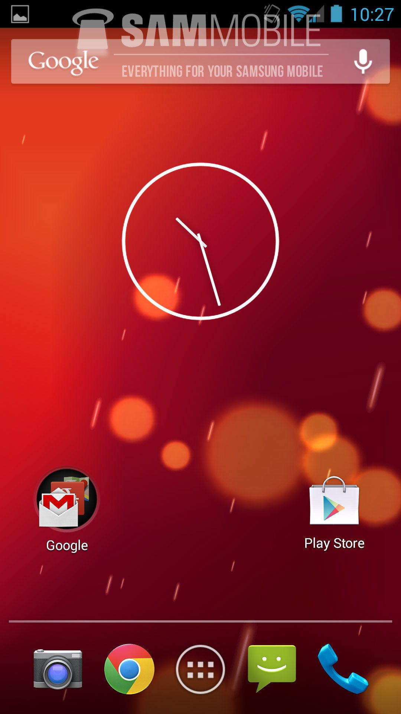

Android 4.3 Jelly Bean
Apresenta mudanças mais sutis, quando comparado com o Android 4.1 e 4.2 Jelly Bean. Uma das vantagens, no entanto, são os perfis fechados: além do aparelho poder ter várias contas, cada conta tem suas configurações e aplicativos próprios. E você pode limitar o acesso de uma conta a alguns recursos. Sendo assim, pode ser bem útil para pais que compartilham o celular com seus filhos para eles jogarem. Nessa versão do Android, o pai pode bloquear compras no Google Play, por exemplo. O sistema Android 4.3 também permite uma nova digitação, que reconhece mais rápido as palavras que você digita.
